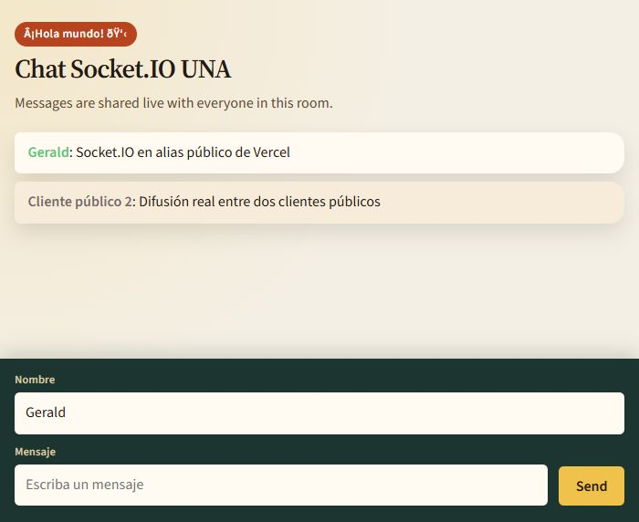
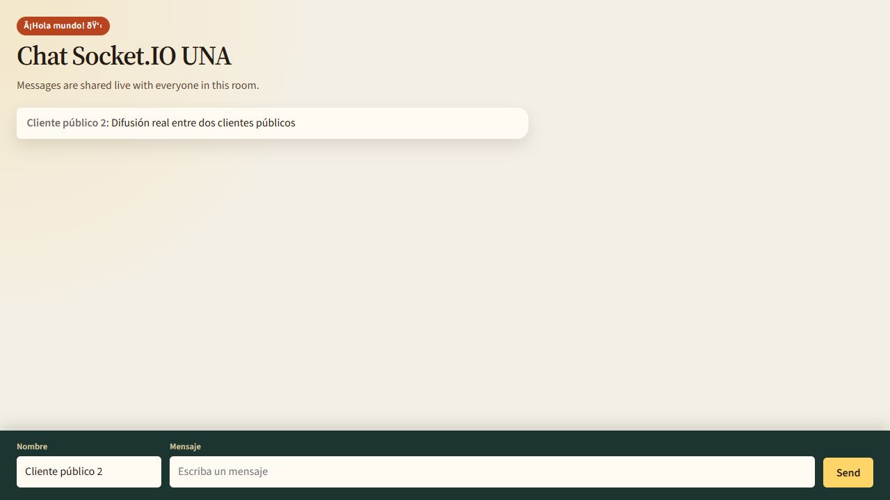
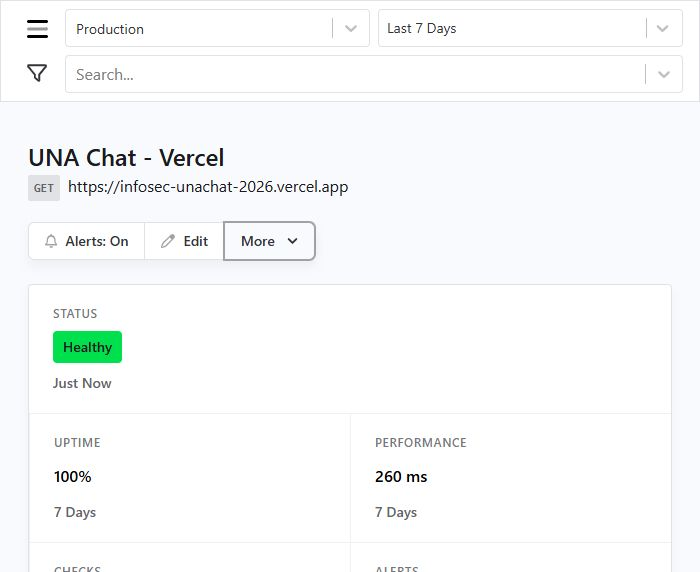
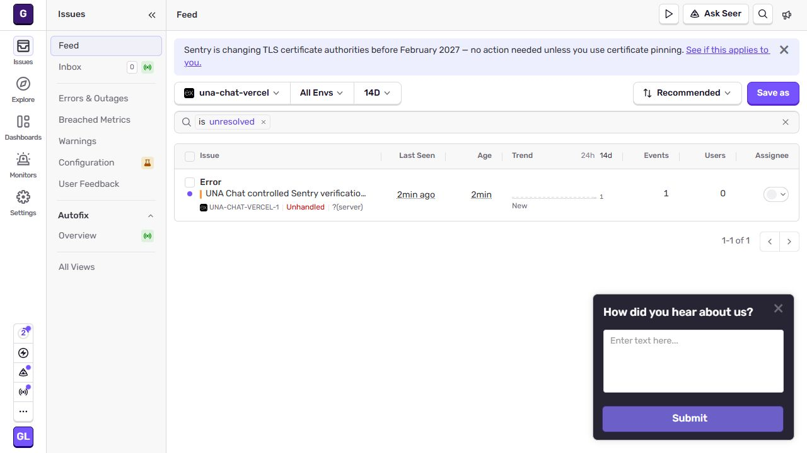
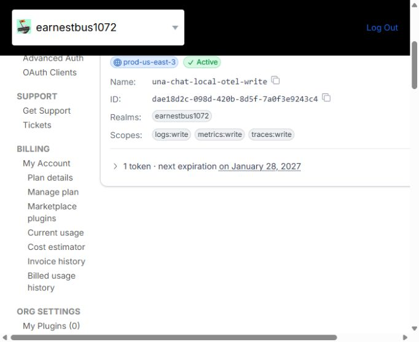
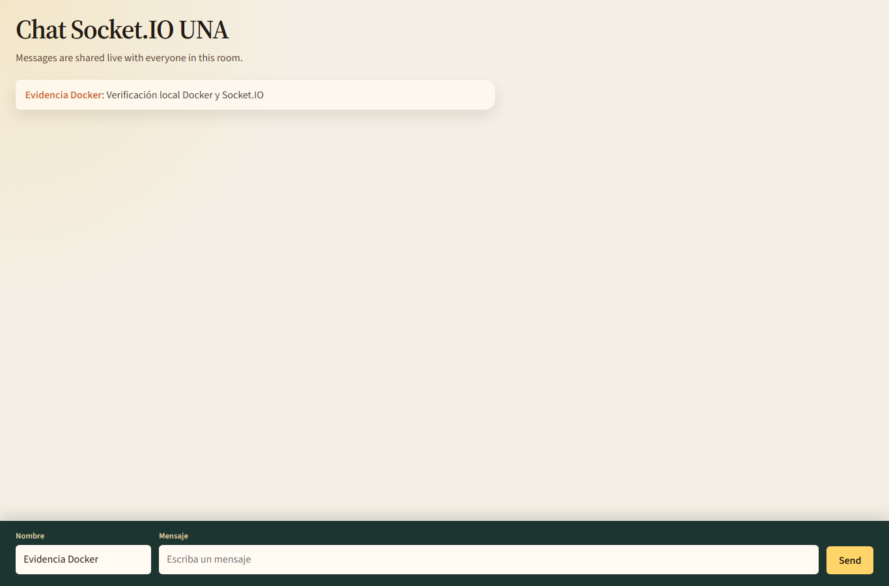
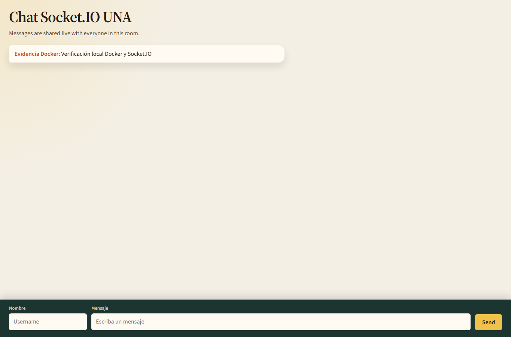

Vercel, Cronitor, Sentry, OpenTelemetry, Grafana Cloud, Docker y Artillery
Instrumentar y verificar UNA Chat en su despliegue público y en un entorno local contenerizado. La práctica cubre disponibilidad, captura de errores, telemetría distribuida y carga funcional a través del protocolo real del chat.
| Componente | Estado |
|---|---|
| Vercel + Socket.IO | Operativo; dos clientes intercambiaron mensajes. |
| Cronitor | Monitor creado; URL necesita validarse contra el dominio asignado actual. |
| Sentry | Error controlado recibido en Production; 1 evento. |
| Grafana Cloud | Política OTLP limitada creada; ingestión pendiente de una credencial local segura y consulta. |
| Docker + Artillery | Operativo; carga local completada. |
UNA Chat utiliza Express para servir la interfaz y Socket.IO para recibir el evento Evento-Mensaje-Server y difundir el mensaje a los clientes conectados.
/api/socket-io/socket.io en cliente, servidor y pruebas, con transporte WebSocket y reconexión.trace_id y span_id, sin registrar el texto del chat.SENTRY_DSN; se desactiva el envío de PII y se filtran cookies, cabeceras y query strings./__lab/message solo está disponible fuera de Vercel y reutiliza el validador real.127.0.0.1:3000..env.El cliente envía una cadena JSON con nombre, mensaje y color a Evento-Mensaje-Server. El servidor valida el contenido y lo difunde a los clientes mediante el evento de respuesta del chat. Las pruebas validan recepción en ambos clientes.
El proyecto Vercel está conectado al fork correcto y a la rama master. El panel mostró el deployment en estado Ready y la aplicación pública respondió correctamente.
URL pública asignada: https://infosec-unachat-2026-black.vercel.app
Repositorio: Gerald120904/infosec-unachat-2026

Captura original de la aplicación desde el alias de producción. La evidencia muestra el chat activo y mensajes difundidos; no se ejecutó carga contra el servicio público.
Se usaron dos páginas independientes del alias público. Ambas establecieron el transporte WebSocket y recibieron los mensajes publicados en la sala.

Registro: parte-1-vercel-sentry-cronitor/vercel-chat-test-2026-10-30.txt
Se creó el monitor UNA Chat - Vercel para el alias público. La configuración es GET cada cinco minutos, timeout de 10 segundos, cuatro regiones y lista de notificaciones Default. Las alertas están habilitadas.

Primer chequeo real: Healthy HTTP 200, 260 ms desde Frankfurt. Uptime inicial mostrado: 100% para el período registrado.
Monitor: cronitor.io/app/monitors/UTzIWf. El monitor anterior de Render se conservó separado.
Las notificaciones están configuradas en Default y el control de alertas indica On. No se generó una caída artificial para probar el envío de una notificación.
En la organización gerald-aw0 se creó el proyecto Express una-chat-vercel. El SDK Node se inicializa en Vercel; la captura de PII está desactivada. La variable SENTRY_DSN quedó configurada en el entorno Production.

La ruta temporal ya se eliminó del código fuente. Falta quitar sus variables temporales del panel Vercel y desplegar esa limpieza. La evidencia no incluye DSN, claves ni datos de usuario.
Se configuró la política una-chat-local-otel-write en la organización Grafana. Sus únicos permisos son logs:write, metrics:write y traces:write.

GRAFANA_CLOUD_OTLP_TOKEN y descarta la variable en el arranque..env ignorado por Git y consultar realmente logs, métricas y trazas en Grafana Cloud. La captura demuestra permisos, no ingestión.Docker Engine 29.9.2 respondió a docker info y docker version. El servicio de Compose quedó Healthy en 127.0.0.1:3000, sin detener ni modificar contenedores de otros proyectos.

http://127.0.0.1:3000/ → HTTP 200.trace_id y span_id para los mensajes; se omitió el texto del chat.Configuración reproducible: Dockerfile, docker-compose.yml y docker-entrypoint.sh.
La prueba funcional conectó dos páginas al chat de localhost. Un cliente publicó el mensaje mediante el evento Socket.IO real y el otro lo recibió.

El equipo también mantenía activo el contenedor ajeno respondent-community-respondent-1. Se dejó sin cambios. El uso de CPU varió durante la sesión, por lo que los percentiles deben interpretarse como medición del entorno de laboratorio, no como benchmark aislado de hardware.
Artillery 2 usó su motor nativo socketio durante 60 s con arrivalRate: 5, un mensaje por usuario virtual. Se contaron los mensajes procesados por logs de servidor.
| Métrica | Socket.IO | HTTP local |
|---|---|---|
| Duración / tasa | 60 s / 5 VU/s | 60 s / 5 VU/s |
| Solicitudes previstas | 300 mensajes | 300 POST |
| Procesadas / respuestas | 300 procesados | 300 HTTP 200 |
| Errores | 0 | 0 |
| p50 | 3.7 ms | 4.0 ms |
| p95 | 17.3 ms | 8.9 ms |
| p99 | 29.1 ms | 22.9 ms |
Socket.IO: 300 mensajes emitidos, 300 procesados con outcome=success, 0 VUs fallidos. HTTP: adaptador local-only /__lab/message, 300 respuestas 200. No se inventaron códigos HTTP para eventos Socket.IO.
Lugar de ejecución: solo http://127.0.0.1:3000. Reportes en artillery-socketio-retest-2026-10-30.txt y artillery-http-retest-path-2026-10-30.txt.
| Suite (Node 24.22.1) | Resultado |
|---|---|
| Mocha | 12 passing |
| Jest integración | 5 passing |
| Playwright E2E | 6 passing |
| Total | 23/23 passing |
La auditoría de producción reportó 0 vulnerabilidades. La auditoría completa posterior a Mocha 12 quedó con 3 bajas y 24 moderadas, sin altas. La instalación local completa de npm quedó lenta en Windows; en Docker sí se completó npm ci --omit=dev.
El chat público y la ejecución local contenerizada funcionan; Artillery procesó los 300 mensajes previstos en localhost y Sentry recibió el evento controlado. Queda verificar Cronitor contra el alias asignado de Vercel, retirar variables de prueba en Vercel y validar la recepción/consulta de logs, métricas y trazas en Grafana Cloud.
Vercel: 01-vercel-chat-funcionando; 02-vercel-dos-clientes. Cronitor: 03-cronitor-render-healthy; 04-cronitor-vercel-monitor-created; 05-cronitor-vercel-healthy. Sentry: 06-sentry-project-no-events-yet (estado inicial) y 07-sentry-controlled-event (evento recibido, 2026-10-31). Grafana: 01-grafana-politica-otlp-scopes. Docker: 01-chat-docker; 02-conversacion-docker-dos-clientes; 03-chat-docker-verificado; 04-recepcion-dos-clientes-docker. Las capturas originales están en evidencias-laboratorio/.
Informe extendido: ENTREGA-LABORATORIO.md. Índice y metadatos: evidencias-laboratorio/README.md. Token OTLP y DSN excluidos.